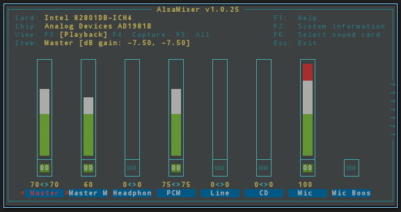

lang fr|gb

volume sonore
la gestion du volume est confiée à alsamixer, le centre de contôle du volume en console.
le fonctionnement est simple:
- choix du canal avec les flèches Gauche/Droite.
- augmenter/diminuer avec les flèches Haut/Bas.
- sourdine on/off avec la touche 'm'.
- Esc pour quitter.
- liste complète des commandes avec F1.
alsamixer s'ouvre en console avec la commande 'alsamixer' ou depuis une entrée de menu: config:volume ou apps:media:volume